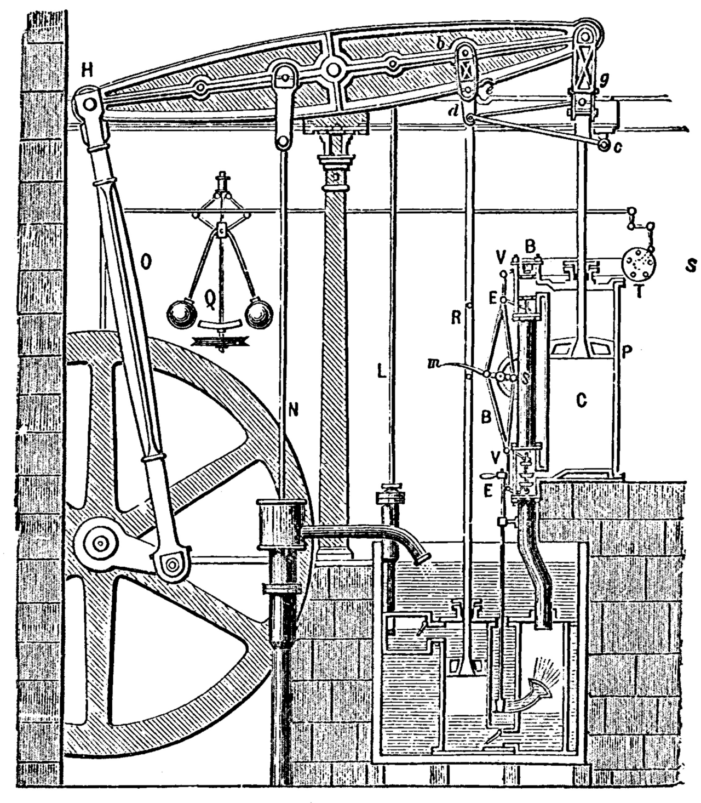

Chapter 2
Linear Algebra II
- Eigenvalue Problems
A matrix eigenvalue problem considers the following vector equation:
| (2.1) |
Here is a given square matrix, an unknown scalar, and an unknown vector. In a matrix eigenvalue problem, the task is to determine ’s and ’s that satisfy Eq. (2.56).
Since is always a solution for any and therefore NOT interesting, we only focus on solutions with .
The solutions to Eq. (2.56) are given the following names:
From this rather innocent looking vector equation flows an amazing amount of relevant theory and an incredible richness of applications.
Eigenvalue problems come up all the time in engineering, physics, geometry, numerics, theoretical mathematics, biology, environmental science, urban planning, economics, psychology, and other areas. [37] Thus, in your career you are likely to encounter eigenvalue problems.
We start with the fundamentals and describe the concept of eigenvalue problems in Determining Eigenvalues and Eigenvectors and explain Eq. (2.56) with numerous matrices and then we will closely look at different applications where this can be applied ranging from mass-spring systems of physics to population control models of environmental science.
Later on we will investigate eigenvalue problems for real symmetric, skew-symmetric, and orthogonal matrices in in Symmetric, Skew-Symmetric, and Orthogonal Matrices and their complex counterparts [38] which are important in modern physics. in Complex Matrices and Forms. Between these section, in Eigenbases. Diagonalization. Quadratic Forms, we will have a look at how by diagonalizing a matrix, we obtain its eigenvalues.
2.1 Determining Eigenvalues and Eigenvectors
2.1.1 How to Find Eigenvalues and Eigenvectors
2.1.2 Applications of Eigenvalue Problems
2.2 Symmetric, Skew-Symmetric, and Orthogonal Matrices
2.2.1 Orthogonal Transformations and Orthogonal Matrices
2.3 Eigenbases. Diagonalization. Quadratic Forms
2.3.1 Similarity of Matrices and Diagonalization
2.3.2 Quadratic Forms and Transformation to Principal Axes
2.4 Complex Matrices and Forms
2.4.1 Eigenvalues
2.4.2 Hermitian and Skew-Hermitian Forms
A History of Eigenvalues
It is quite interesting that, eigenvalues are often introduced in the context of linear algebra or theory of matrices. However, from a historical standpoint, they were first used in the study of quadratic forms and differential equations.
In the
century, Leonhard Euler studied the rotational motion of a rigid body, and discovered the importance of
the principal axes. [39] ¶ 
In the early century, Augustin-Louis Cauchy saw how their work could be used to classify the quadric surfaces, [40] a generalization of conic sections i.e., ellipses, parabolas, and hyperbolas. and generalized it to arbitrary dimensions [†-1] Hawkins, T. Cauchy and the spectral theory of matrices. Historia mathematica 2, 1–29 (1975). Cauchy also coined the term racine caractéristique (characteristic root), for what is now called eigenvalue which his term survives in characteristic equation on solving differential equations.
Later, Joseph Fourier used the work of Lagrange and Pierre-Simon Laplace to solve the heat equation by separation of variables in his 1822 treatise The Analytic Theory of Heat [†-2] Kline, M. Mathematical thought from ancient to modern times (Oxford university press, 1990). Charles-François Sturm further elaborated on Fourier’s ideas, and brought them to the attention of Cauchy, who combined them with his own ideas and arrived at the fact that real symmetric matrices have real eigenvalues [†-1] Hawkins, T. Cauchy and the spectral theory of matrices. Historia mathematica 2, 1–29 (1975).
Around the same time, Francesco Brioschi proved that the eigenvalues of orthogonal matrices lie on the unit circle [†-1] Hawkins, T. Cauchy and the spectral theory of matrices. Historia mathematica 2, 1–29 (1975), and Alfred Clebsch found the corresponding result for skew-symmetric matrices [†-2] Kline, M. Mathematical thought from ancient to modern times (Oxford university press, 1990).
Finally, Karl Weierstrass clarified an important aspect in the stability theory started by Laplace, by realizing that defective matrices can cause instability [†-1] Hawkins, T. Cauchy and the spectral theory of matrices. Historia mathematica 2, 1–29 (1975).
In the meantime, Joseph Liouville studied eigenvalue problems similar to those of Sturm; the discipline that grew out of their work is now called SturmLiouville theory [†-2] Kline, M. Mathematical thought from ancient to modern times (Oxford university press, 1990). [41] This topic will be covered in M.Sc Higher Mathematics II. Karl Hermann Amandus Schwarz studied the first eigenvalue of Laplace’s equation on general domains towards the end of the century, while Poincaré studied Poisson’s equation a few years later [†-2] Kline, M. Mathematical thought from ancient to modern times (Oxford university press, 1990).
At the start of the century, David Hilbert studied the eigenvalues of integral operators by viewing the operators as infinite matrices [†-2] Kline, M. Mathematical thought from ancient to modern times (Oxford university press, 1990). He was the first to use the German word eigen, which means own [†-3] Hilbert, D. Grundzüge einer allgemeinen Theorie der linearen Integralgleichungen in Integralgleichungen und Gleichungen mit unendlich vielen Unbekannten 6–169 (Springer, 1989), to denote eigenvalues and eigenvectors [42] In his paper he writes “Insbesondere in dieser ersten Mitteilung gelange ich zu Formeln, die die Entwickelung einer willkürlichen Funktion nach gewissen ausgezeichneten Funktionen, die ich ’Eigenfunktionen’ nenne, liefern: ” (In particular, in this first report I arrive at formulas that provide the [series] development of an arbitrary function in terms of some distinctive functions, which I call eigenfunctions: ) “Dieser Erfolg ist wesentlich durch den Umstand bedingt, daß ich nicht, wie es bisher geschah, in erster Linie auf den Beweis für die Existenz der Eigenwerte ausgehe, ” (This success is fundamentally attributable to the fact that I do not, as it has happened until now, first of all aim at a proof of the existence of eigenvalues ) though he may have been following a related usage by Hermann von Helmholtz. For some time, the standard term in English was “proper value”, but the more distinctive term “eigenvalue” became the standard today [†-4] Aldrich, J. Eigenvalue, eigenfunction, eigenvector, and related terms. Earliest known uses of some of the words of mathematics (2006).
Numerical Solving of Eigenvalues The first numerical algorithm for computing eigenvalues and eigenvectors appeared in 1929, when Richard von Mises published the power method [†-5] Mises, R. & Pollaczek-Geiringer, H. Praktische verfahren der gleichungsauflösung. ZAMM-Journal of Applied Mathematics and Mechanics/Zeitschrift für Angewandte Mathematik und Mechanik 9, 58–77 (1929). One of the most popular methods today, the QR algorithm, was proposed independently by John G. F. Francis [†-6] Francis, J. G. The QR transformation a unitary analogue to the LR transformation–Part 1. The Computer Journal 4, 265–271 (1961) and Vera Kublanovskaya [†-7] Kublanovskaya, V. N. On some algorithms for the solution of the complete eigenvalue problem. USSR Computational Mathematics and Mathematical Physics 1, 637–657 (1962) in 1961 [†-8] Golub, G. H. & Van Loan, C. F. Matrix computations 3rd edition. The John Hopkins University, Baltimore (1996).
- 1.
- Hawkins, T. Cauchy and the spectral theory of matrices. Historia mathematica 2, 1–29 (1975)
- 2.
- Kline, M. Mathematical thought from ancient to modern times (Oxford university press, 1990)
- 3.
- Hilbert, D. Grundzüge einer allgemeinen Theorie der linearen Integralgleichungen in Integralgleichungen und Gleichungen mit unendlich vielen Unbekannten 6–169 (Springer, 1989)
- 4.
- Aldrich, J. Eigenvalue, eigenfunction, eigenvector, and related terms. Earliest known uses of some of the words of mathematics (2006)
- 5.
- Mises, R. & Pollaczek-Geiringer, H. Praktische verfahren der gleichungsauflösung. ZAMM-Journal of Applied Mathematics and Mechanics/Zeitschrift für Angewandte Mathematik und Mechanik 9, 58–77 (1929)
- 6.
- Francis, J. G. The QR transformation a unitary analogue to the LR transformation–Part 1. The Computer Journal 4, 265–271 (1961)
- 7.
- Kublanovskaya, V. N. On some algorithms for the solution of the complete eigenvalue problem. USSR Computational Mathematics and Mathematical Physics 1, 637–657 (1962)
- 8.
- Golub, G. H. & Van Loan, C. F. Matrix computations 3rd edition. The John Hopkins University, Baltimore (1996)
- [37].
- Thus, in your career you are likely to encounter eigenvalue problems.
- [38].
- which are important in modern physics.
- [40].
- a generalization of conic sections i.e., ellipses, parabolas, and hyperbolas.
- [41].
- This topic will be covered in M.Sc Higher Mathematics II.
- [42].
- In his paper he writes “Insbesondere in dieser ersten Mitteilung gelange ich zu Formeln, die die Entwickelung einer willkürlichen Funktion nach gewissen ausgezeichneten Funktionen, die ich ’Eigenfunktionen’ nenne, liefern: ” (In particular, in this first report I arrive at formulas that provide the [series] development of an arbitrary function in terms of some distinctive functions, which I call eigenfunctions: ) “Dieser Erfolg ist wesentlich durch den Umstand bedingt, daß ich nicht, wie es bisher geschah, in erster Linie auf den Beweis für die Existenz der Eigenwerte ausgehe, ” (This success is fundamentally attributable to the fact that I do not, as it has happened until now, first of all aim at a proof of the existence of eigenvalues )